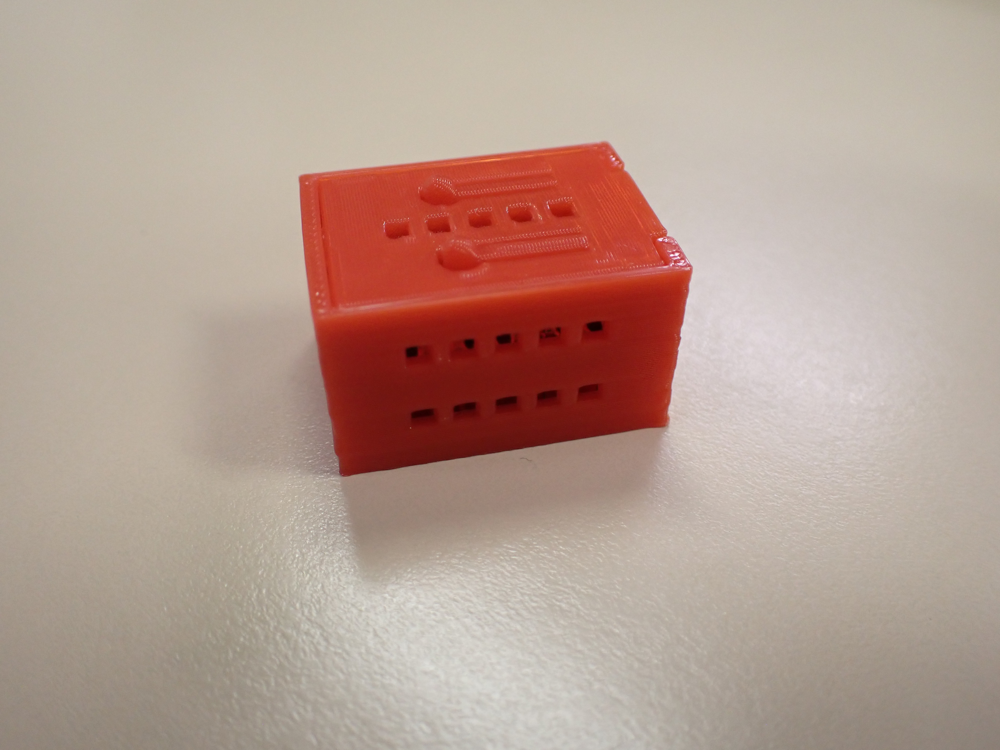
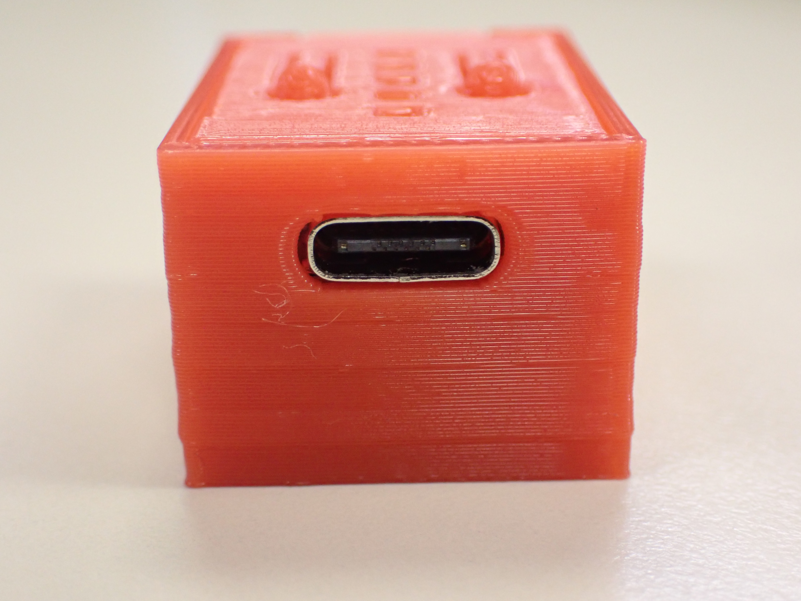
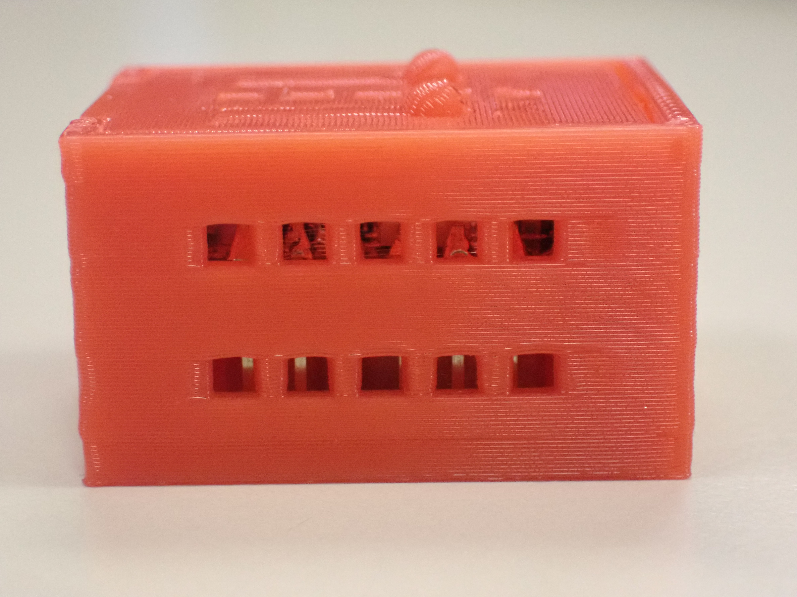
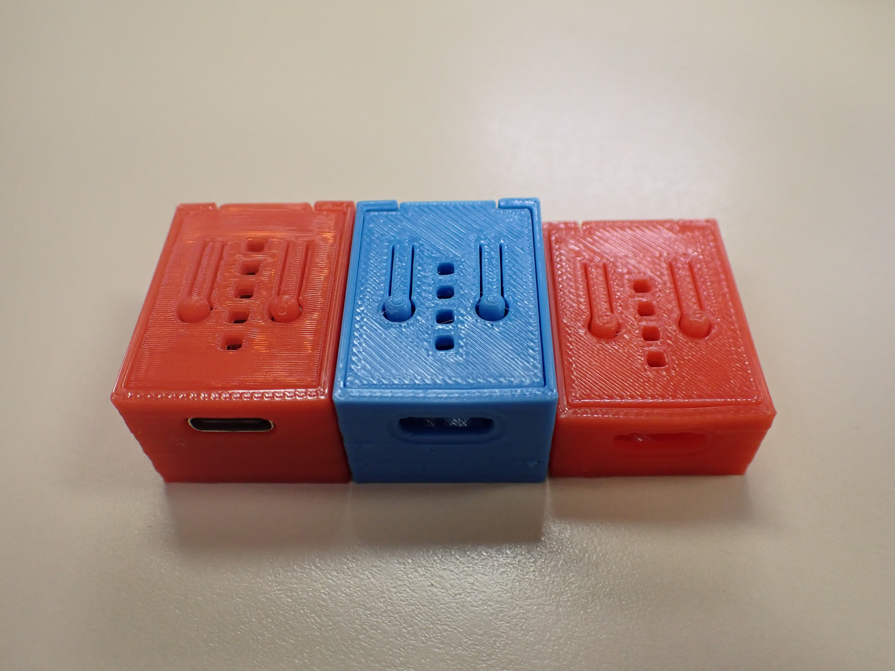
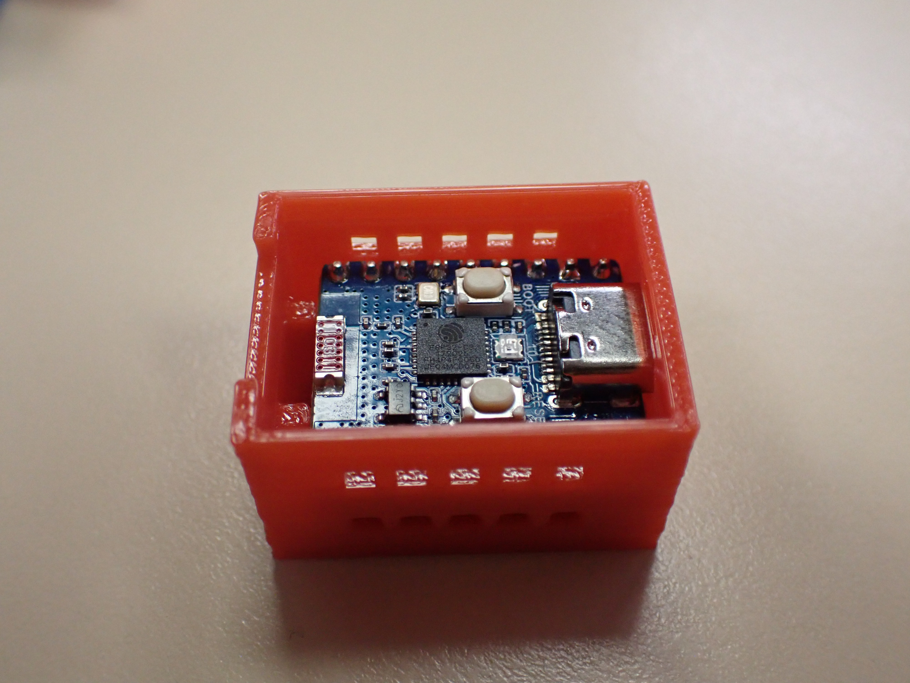

Final Design
Definitive version of the protective case for the ESP32C3 Zero: all corrections applied, integrated buttons, and optimised ventilation.
Description
The final design incorporates all the corrections and improvements identified during the two prototyping phases. The case ensures easy board insertion, full access to the USB-C port and GPIO pins, adequate ventilation, and the ability to press the BOOT and RST buttons without opening the case.
The final model was designed in Tinkercad, printed in PLA using the BambuLab A1 printer, and tested with the ESP32C3 Zero board.
Key Features
- Precise Fit Optimised tolerances for easy board insertion without excessive play.
- USB-C Access Front opening aligned with the board's USB-C port for programming and power supply.
- GPIO Pin Slots Two extended side slots provide full access to the GPIO pins without removing the case.
- Integrated Buttons Two flexible buttons in the lid allow the BOOT and RST buttons to be pressed without opening the case.
- Ventilation Openings on both sides and the lid ensure adequate ventilation surface area.
Photos





Design Comparison
| Criterion | Prototype 1 | Prototype 2 | Final Design |
|---|---|---|---|
| Fit and Dimensions | Too short; the board was difficult to insert | +1 mm in length; easy insertion | Optimised tolerances; precise fit |
| Ventilation | Lid only; insufficient surface area | Openings on sides and lid; adequate surface area | Optimised ventilation; uniform airflow |
| Print Ease | Print stopped before completion | Print completed successfully | Optimised settings; no issues |
| USB-C Access | Opening present but misaligned | Correct and aligned opening | Full access with no obstructions |
| GPIO Pin Access | Slots present but too short | Extended slots; full access | Full access to all pins |
| Button Access | Holes present; direct access | Flexible buttons integrated into the lid | Flexible buttons; no need to open the case |
| Print Quality | Incomplete print; height not reached | Good quality; fragile clip | Excellent quality; robust structure |
Conclusions
The prototyping process resulted in a functional case that meets all the initial project requirements. Each iteration allowed specific issues to be identified and resolved, leading to a final design that is stable, functional, and suitable for classroom use.